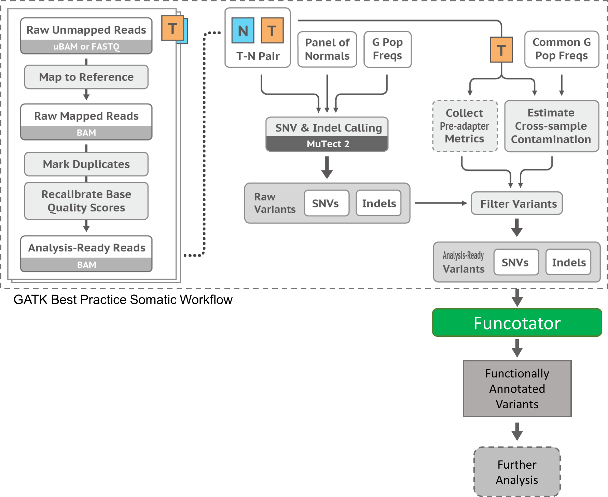

Mutation Annotation Format (MAF)
Task
MAF files for BZKF/MTB. The document contains my research on that topic and summarizes the information I found.
Description
Mutation Annotation Format (MAF) files are tab-delimited files that contain somatic and/or germline mutation annotations.
Variants are discovered by aligning DNA sequences derived from tumor samples and sequences derived from normal samples to a reference sequence. A MAF file identifies, for all samples in a project, the discovered putative or validated mutations and categorizes those mutations (polymorphism, deletion, or insertion) as somatic (originating in the tumor tissue) or germline (originating from the germline). Mutation annotation are also reported. Note that VCF files report on all transcripts affected by a mutation while MAF files only report on the most affected one.
The GDC MAF file format https://docs.gdc.cancer.gov/Data/File_Formats/MAF_Format/ is based on the TCGA Mutation Annotation Format specifications, with additional columns included.
Generating MAF files
-
For VCF files or simple tabular files, easy option is to use vcf2maf (https://github.com/mskcc/vcf2maf) utility which will annotate VCFs, prioritize transcripts, and generates an MAF. Recent updates to gatk has also enabled funcotator (https://gatk.broadinstitute.org/hc/en-us/articles/360035889931-Funcotator-Information-and-Tutorial#1.1) to generate MAF files.
-
If you’re using ANNOVAR for variant annotations, maftools has a handy function annovarToMaf for converting tabular annovar outputs to MAF.
vcf2maf tool
To convert a VCF into a MAF, each variant must be mapped to only one of all possible gene transcripts/isoforms that it might affect. But even within a single isoform, a Missense_Mutation close enough to a Splice_Site, can be labeled as either in MAF format, but not as both. This selection of a single effect per variant, is often subjective. And that's what this project attempts to standardize. The vcf2maf and maf2maf scripts leave most of that responsibility to Ensembl's VEP, but allows you to override their "canonical" isoforms, or use a custom ExAC VCF for annotation. Though the most useful feature is the extensive support in parsing a wide range of crappy MAF-like or VCF-like formats we've seen out in the wild.
Install Ensembl's VEP v102 with local cache for running offline
https://gist.github.com/ckandoth/61c65ba96b011f286220fa4832ad2bc0
Ensembl's VEP (Variant Effect Predictor) is popular for how it picks a single effect per gene as detailed here, its CLIA-compliant HGVS variant format, and Sequence Ontology nomenclature for variant effects.
Instead of the official instructions, we will use conda to install VEP and its dependencies. If you don't already have conda, install it into $HOME/miniconda3 as follows:
curl -sL https://repo.anaconda.com/miniconda/Miniconda3-py37_4.9.2-Linux-x86_64.sh -o /tmp/miniconda.sh
sh /tmp/miniconda.sh -bfp $HOME/miniconda3
Add the conda bin folder into your $PATH so that all installed tools are accessible via command-line. You can also add this to your ~/.bashrc or ~/.profile for this to persist across logins:
export PATH=$HOME/miniconda3/bin:$PATH
Download and install VEP, its dependencies, and also samtools/bcftools/liftOver:
conda install -qy -c conda-forge -c bioconda -c defaults ensembl-vep==102.0 htslib==1.10.2 bcftools==1.10.2 samtools==1.10 ucsc-liftover==377
Download VEP's offline cache for GRCh38, and the reference FASTA:
mkdir -p $HOME/.vep/homo_sapiens/102_GRCh38/
rsync -avr --progress rsync://ftp.ensembl.org/ensembl/pub/release-102/variation/indexed_vep_cache/homo_sapiens_vep_102_GRCh38.tar.gz $HOME/.vep/
tar -zxf $HOME/.vep/homo_sapiens_vep_102_GRCh38.tar.gz -C $HOME/.vep/
rsync -avr --progress rsync://ftp.ensembl.org/ensembl/pub/release-102/fasta/homo_sapiens/dna_index/ $HOME/.vep/homo_sapiens/102_GRCh38/
(Optional) Download VEP's offline cache for GRCh37, and the reference FASTA which we must bgzip instead of gzip:
mkdir -p $HOME/.vep/homo_sapiens/102_GRCh37/
rsync -avr --progress rsync://ftp.ensembl.org/ensembl/pub/release-102/variation/indexed_vep_cache/homo_sapiens_vep_102_GRCh37.tar.gz $HOME/.vep/
tar -zxf $HOME/.vep/homo_sapiens_vep_102_GRCh37.tar.gz -C $HOME/.vep/
rsync -avr --progress rsync://ftp.ensembl.org/ensembl/pub/grch37/release-102/fasta/homo_sapiens/dna/Homo_sapiens.GRCh37.dna.toplevel.fa.gz $HOME/.vep/homo_sapiens/102_GRCh37/
gzip -d $HOME/.vep/homo_sapiens/102_GRCh37/Homo_sapiens.GRCh37.dna.toplevel.fa.gz
bgzip -i $HOME/.vep/homo_sapiens/102_GRCh37/Homo_sapiens.GRCh37.dna.toplevel.fa
samtools faidx $HOME/.vep/homo_sapiens/102_GRCh37/Homo_sapiens.GRCh37.dna.toplevel.fa.gz
Test running VEP in offline mode on a GRCh38 VCF:
curl -sLO https://raw.githubusercontent.com/Ensembl/ensembl-vep/release/102/examples/homo_sapiens_GRCh38.vcf
vep --species homo_sapiens --assembly GRCh38 --offline --no_progress --no_stats --sift b --ccds --uniprot --hgvs --symbol --numbers --domains --gene_phenotype --canonical --protein --biotype --tsl --pubmed --variant_class --shift_hgvs 1 --check_existing --total_length --allele_number --no_escape --xref_refseq --failed 1 --vcf --minimal --flag_pick_allele --pick_order canonical,tsl,biotype,rank,ccds,length --dir $HOME/.vep --fasta $HOME/.vep/homo_sapiens/102_GRCh38/Homo_sapiens.GRCh38.dna.toplevel.fa.gz --input_file homo_sapiens_GRCh38.vcf --output_file homo_sapiens_GRCh38.vep.vcf --polyphen b --af --af_1kg --af_esp --regulatory
Quick start vcf2maf
Find the latest stable release, download it, and view the detailed usage manuals for vcf2maf and maf2maf:
export VCF2MAF_URL=`curl -sL https://api.github.com/repos/mskcc/vcf2maf/releases | grep -m1 tarball_url | cut -d\" -f4`
curl -L -o mskcc-vcf2maf.tar.gz $VCF2MAF_URL; tar -zxf mskcc-vcf2maf.tar.gz; cd mskcc-vcf2maf-*
perl vcf2maf.pl --man
perl maf2maf.pl --man
If you don't have VEP installed, then follow this gist. Of the many annotators out there, VEP is preferred for its large team of active coders, and its CLIA-compliant HGVS formats. After installing VEP, test out vcf2maf like this:
perl vcf2maf.pl --input-vcf tests/test.vcf --output-maf tests/test.vep.maf
To fill columns 16 and 17 of the output MAF with tumor/normal sample IDs, and to parse out genotypes and allele counts from matched genotype columns in the VCF, use options --tumor-id and --normal-id. Skip option --normal-id if you didn't have a matched normal:
perl vcf2maf.pl --input-vcf tests/test.vcf --output-maf tests/test.vep.maf --tumor-id WD1309 --normal-id NB1308
If you want to skip running VEP and need a minimalist MAF-like file listing data from the input VCF only, then use the --inhibit-vep option. If your input VCF contains VEP annotation, then vcf2maf will try to extract it. But be warned that the accuracy of your resulting MAF depends on how VEP was operated upstream. In standard operation, vcf2maf runs VEP with very specific parameters to make sure everyone produces comparable MAFs. So, it is strongly recommended to avoid --inhibit-vep unless you know what you're doing.
Converting Annovar output to maf using maftools 'annovarToMaf'
Annovar output is generally in a tabular format with various annotation columns. This function converts such annovar output files into MAF. This function requires that annovar was run with gene based annotation as a first operation, before including any filter or region based annotations.
table_annovar.pl example/ex1.avinput humandb/ -buildver hg19 -out myanno -remove -protocol (refGene),cytoBand,dbnsfp30a -operation (g),r,f -nastring NA
perl table_annovar.pl variants.tsv ~/path/to/humandb/ -buildver hg19
-out variants --otherinfo -remove -protocol ensGene -operation g -nastring NA
table_annovar.pl can directly support input and output of VCF files (the annotation will be written to the INFO field of the output VCF file).
perl table_annovar.pl example/ex2.vcf humandb/ -buildver hg19 -out myanno -remove -protocol refGene,cytoBand,exac03,avsnp147,dbnsfp30a -operation g,r,f,f,f -nastring . -vcfinput -polish
A vcf file is created ex2.hg19_multianno.vcf. Additionally, a tab-delimited output file is also available as ex2.hg19_multianno.txt, which contains similar information in a different format.
annovarToMaf mainly uses gene based annotations for processing, rest of the annotation columns from input file will be attached to the end of the resulting MAF.
in R now do the follwing:
if (!require("BiocManager"))
install.packages("BiocManager")
BiocManager::install("maftools")
install.packages('R.utils')
library(maftools)
var.annovar = system.file("extdata", "variants.hg19_multianno.txt", package = "maftools")
var.annovar.maf = annovarToMaf(annovar = var.annovar, Center = 'CSI-NUS', refBuild = 'hg19',tsbCol = 'Tumor_Sample_Barcode', table = 'ensGene')
write.table(var.annovar.maf, file = "var.annovar_tsv.maf", sep='\t', quote=FALSE)
Annovar, when used with Ensemble as a gene annotation source, uses ensemble gene IDs as Gene names. In that case, use annovarToMaf with argument table set to ensGene which converts ensemble gene IDs into HGNC symbols.
Funcotator tool
Funcotator (FUNCtional annOTATOR) analyzes given variants for their function (as retrieved from a set of data sources) and produces the analysis in a specified output file.
This tool allows a user to add their own annotations to variants based on a set of data sources. Each data source can be customized to annotate a variant based on several matching criteria. This allows a user to create their own custom annotations easily, without modifying any Java code.
An example Funcotator workflow based on the GATK Best Practices Somatic Pipeline is as follows:

The MAF format used in Funcotator is an extension of the standard TCGA MAF. It is based on the MAF format specified for Oncotator here under Output Format. While the actual columns can vary (due to different data sources being used to create annotations), columns 1-67 will generally be the same.
In the case of a variant with multiple alternate alleles, each alternate allele will be written to a separate line in the MAF file.
A MAF instantiation of the Funcotator tool looks like this:
./gatk Funcotator \
--variant variants.vcf \
--reference Homo_sapiens_assembly19.fasta \
--ref-version hg19 \
--data-sources-path funcotator_dataSources.v1.2.20180329 \
--output variants.funcotated.maf \
--output-file-format MAF
Optional Parameters
- --ignore-filtered-variants this flag controls whether Funcotator will annotate filtered variants. By default, this flag is set to true. To annotate filtered variants, run Funcotator with this flag set to false.
- --transcript-selection-mode this parameter determines how the primary annotated transcript is determined. The two modes for this parameter are BEST_EFFECT, CANONICAL, and ALL. By default, Funcotator uses the CANONICAL transcript selection mode.
The explanations and rules governing the two transcript selection modes are as follows:
BEST_EFFECT
Select a transcript to be reported with details with priority on effect according to the folowing list of selection criteria:
- Choose the transcript that is on the custom list specified by the user. If no list was specified, treat as if no transcripts were on the list (tie).
- In case of tie, choose the transcript that yields the variant classification highest on the variant classification rank list (see below).
- If still a tie, choose the transcript with highest level of curation. Note that this means lower number is better for level (see below).
- If still a tie, choose the transcript with the best appris annotation (see below).
- If still a tie, choose the transcript with the longest transcript sequence length.
- If still a tie, choose the first transcript, alphabetically.
CANONICAL
Select a transcript to be reported with details with priority on canonical order according to the folowing list of selection criteria:
- Choose the transcript that is on the custom list specified by the user. If no list was specified, treat as if all transcripts were on the list (tie).
- In case of tie, choose the transcript with highest level of curation. Note that this means lower number is better for level (see below).
- If still a tie, choose the transcript that yields the variant classification highest on the variant classification rank list (see below).
- If still a tie, choose the transcript with the best appris annotation (see below).
- If still a tie, choose the transcript with the longest transcript sequence length.
- If still a tie, choose the first transcript, alphabetically.
--transcript-list this parameter will restrict the reported/annotated transcripts to only include those on the given list of transcript IDs. This list can be given as the path to a file containing one transcript ID per line OR this parameter can be given multiple times each time specifying a transcript ID.
When specifying transcript IDs, transcript version numbers will be ignored.
Using a manually specified set of transcripts for the transcript list:
./gatk Funcotator \
--variant variants.vcf \
--reference Homo_sapiens_assembly19.fasta \
--ref-version hg19 \
--data-sources-path funcotator_dataSources.v1.2.20180329 \
--output variants.funcotated.maf \
--output-file-format MAF \
--transcript-list TRANSCRIPT_ID1 \
--transcript-list TRANSCRIPT_ID2
./gatk Funcotator \
--variant variants.vcf \
--reference Homo_sapiens_assembly19.fasta \
--ref-version hg19 \
--data-sources-path funcotator_dataSources.v1.2.20180329 \
--output variants.funcotated.maf \
--output-file-format MAF \
--transcript-list transcriptFile.txt
Contents of transcriptFile.txt:
TRANSCRIPT_ID1
TRANSCRIPT_ID2
--annotation-default this parameter specifies a default value for an annotation. This default value for this annotation will be used for any annotated variant. However if this annotation would be added by Funcotator to this variant, the Funcotator value will overwrite this default.
For example, to set the Center annotation to broad.mit.edu:
./gatk Funcotator \
--variant variants.vcf \
--reference Homo_sapiens_assembly19.fasta \
--ref-version hg19 \
--data-sources-path funcotator_dataSources.v1.2.20180329 \
--output variants.funcotated.maf \
--output-file-format MAF \
--annotation-default Center:broad.mit.edu
--annotation-override this parameter specifies an override value for an annotation. If the annotation were to be added to a variant by a data source, the value for that annotation would be replaced with the value specified in the annotation override. If the annotation would not be added by a data source it is added to the output with the given value.
For example, to override the NCBI_Build annotation to HG19:
./gatk Funcotator \
--variant variants.vcf \
--reference Homo_sapiens_assembly19.fasta \
--ref-version hg19 \
--data-sources-path funcotator_dataSources.v1.2.20180329 \
--output variants.funcotated.maf \
--output-file-format MAF \
--annotation-override NCBI_Build:HG19
Transfer of MAF files to cBioPortal server
In the cronjobs file add the following line to daily transfer a folder with MAF Files to the remote cBioPortal server.
@daily scp -r /local/maf_directory remote_username@10.10.0.2:/remote/maf_directory